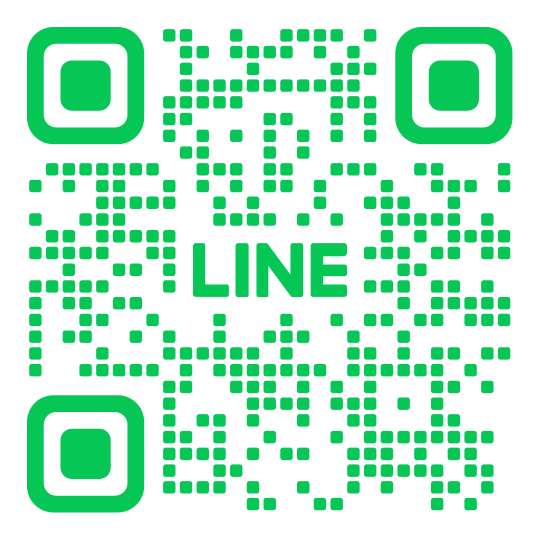

ご利用までの流れ
簡単な4ステップで
利用を開始できます。
ご相談から利用開始まで、スタッフが丁寧にサポートしますのでご安心ください。不安な点があれば、いつでもお気軽にご質問いただけます。
1
お問い合わせ・見学相談
まずはLINEでお気軽にお問い合わせください。事業所の雰囲気や仕事内容を実際に見ていただくための見学も随時受け付けています。
2
体験利用
「自分に合うか試してみたい」という方のために、体験利用が可能です。実際の作業を体験しながら、事業所の雰囲気を感じてください。
もちろん、体験期間中の工賃もお支払いします。
3
受給者証の申請・取得
正式な利用には「障害福祉サービス受給者証」が必要です。お住まいの市区町村の障害福祉窓口での申請となりますが、手続きが不安な方はスタッフが同行・サポートしますのでご安心ください。
4
ご契約・利用開始
受給者証が発行されたら、個別支援計画にご同意いただいた上で利用契約を結びます。契約が完了したら、いよいよココデザインでの新しい一歩がスタートです！
見学のご予約やお問い合わせは
LINEからどうぞ！
「どんな場所なんだろう？」「自分に合うかな？」
その不安、見学で解消しましょう。
スマートフォンの方はこちらをタップ ↓
▶ LINEで友だち追加QRコードを読み取るか、ボタンをタップして友だち追加してください
